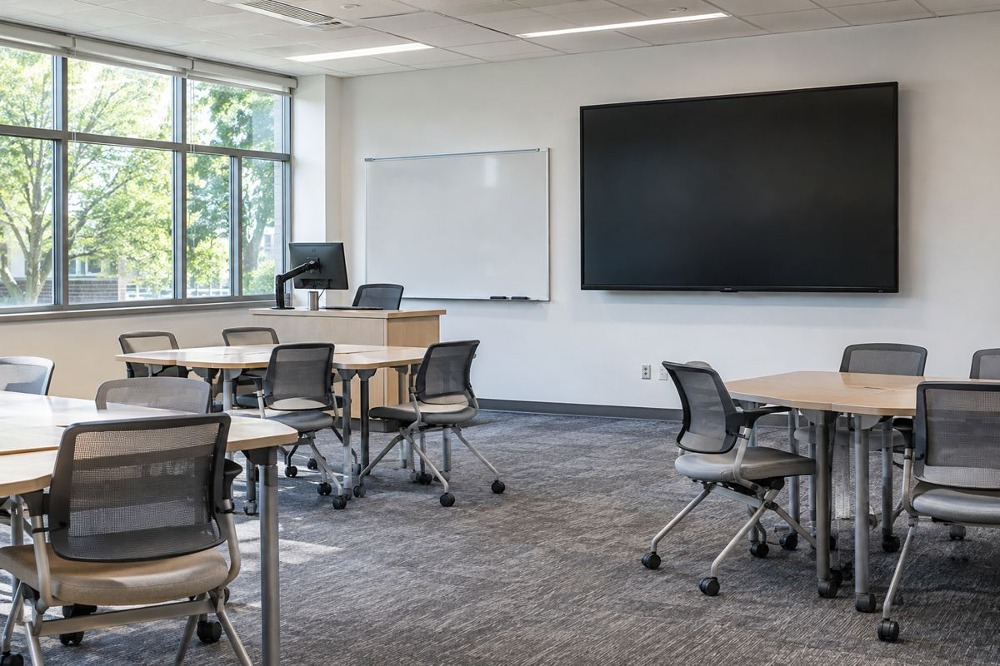

디스플레이 / EXPLAINED
98인치 화면 40대가 들어간 강의 공간, 소니 BRAVIA의 업무용 설계
11월 6일 공개한 UCD 도입 사례는 3월 개관한 시설 이야기다. 화면 크기뿐 아니라 제어·반사·전력 관리가 중요하다.

소니가 11월 6일 아일랜드 유니버시티 칼리지 더블린(UCD)의 O’Connor Centre for Learning에 98인치 BRAVIA BZ53L 디스플레이 40대를 설치한 사례를 공개했다. 시설 자체는 2026년 3월 문을 열었다. 새 화면을 이날 처음 판매했다는 소식이나 11월에 건물을 개관했다는 뜻이 아니다. 이번 발표는 이미 운영 중인 학습 공간에서 대형 화면과 제어·음향 시스템을 어떻게 묶었는지 설명하는 도입 사례다.
가정용 TV와 다른 설치 과제
BRAVIA는 소니의 디스플레이 브랜드이며 이번 제품은 업무용 Professional Display 계열이다. 발표에 따르면 큰 공간에는 98인치, 중소 규모 교실에는 85인치 BZ30L을 함께 배치했다. 화면이 커지면 뒤쪽에서 자료를 볼 여지가 늘지만 글자 크기와 좌석 거리, 시야각은 여전히 중요하다. 한 방에 맞는 크기를 모든 방에 똑같이 적용하는 것보다 공간과 자료의 용도를 맞춰야 한다. 화면 대각선 길이만으로 수업의 가독성을 결정할 수 없는 이유다.
회사는 BZ53L의 반사 억제 기술과 최대 780니트 밝기를 소개했다. 니트는 면적당 빛의 밝기를 나타내는 단위로, 사용 환경을 비교할 때 한 단서가 된다. 그러나 최대 밝기 숫자가 모든 콘텐츠의 실제 표시 밝기나 방 전체의 조명을 뜻하지는 않는다. 창과 천장 조명의 위치, 화면 표면 반사, 화면에 담는 글자와 배경의 대비가 함께 작용한다. 이 기사에서는 강의실을 직접 방문해 어느 좌석에서 얼마나 잘 보이는지 측정하지 않았다.
화면 뒤에 있는 통합 작업
시스템 통합을 맡은 ISSAV | Econocom은 협업 공간 35곳의 시청각 설비를 구성했고, 소니 화면과 제어 장치, 프로젝션, 회의용 카메라, 강의 녹화, 무선 음향 등을 연결했다고 설명했다. 학습 공간 30곳이라는 시설 수와 통합 대상 35곳은 같은 분류의 숫자가 아니므로 그대로 비교해 모순이라고 볼 수 없다. 장비가 서로 연결돼도 사용자가 매번 다른 조작법을 배워야 한다면 운영 부담이 남는다. 공통 제어 환경을 만든다는 설명은 이런 실무 문제와 관련된다.
전력 관리는 사용 방식까지 포함한다
회사는 입력 신호가 없을 때 화면 전원을 끄는 기능과 주변 밝기에 맞춘 조절, 절전 설정 대시보드를 소개했다. 필요하지 않은 시간에 큰 화면을 계속 켜두는 일을 줄이려는 기능이다. 하지만 기능이 있다는 사실만으로 이 시설의 실제 전력 소비가 몇 퍼센트 줄었다고 계산할 수는 없다. 운용 시간과 설정, 이전 설비의 조건이 있어야 비교가 가능하다. 친환경 재료나 가벼운 섀시라는 제품 설명도 전체 시설의 환경 효과와는 범위를 구분해야 한다.
이번 사례가 보여주는 변화는 대형 화면을 하나씩 구매하는 데서 공간 전체의 운영을 설계하는 쪽으로 관심이 넓어진다는 점이다. 이는 공개된 도입 구성에서 읽은 해석이며 학습 성과가 좋아졌다는 독립 연구 결과는 아니다. 학교뿐 아니라 회의실과 공공 안내 공간에서도 화면, 입력 기기, 음향, 조명, 관리 방식을 함께 비교할 이유가 있다. 실제 계약 가격과 장기간의 고장·전력 실적은 이번 자료에 모두 공개되지 않았다. 구매 판단에는 사례의 멋진 사진보다 자기 공간에서의 시야와 운영 조건을 확인하는 과정이 필요하다.